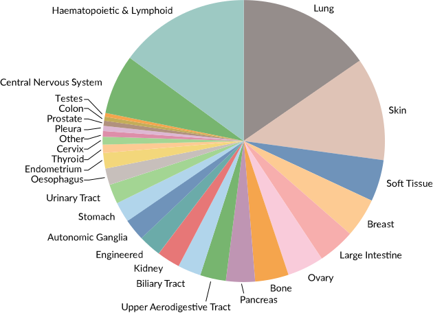
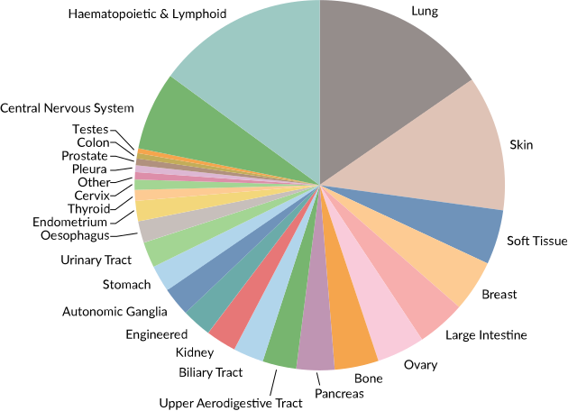

Cancer Cell Line Encyclopedia (CCLE)
The Cancer Cell Line Encyclopedia (CCLE) project started in 2008 as a collaboration between the
Broad Institute, and the
Novartis Institutes for Biomedical Research and its
Genomics Institute of the Novartis Research Foundation. The goal is to conduct a detailed genetic and pharmacologic characterization of a large panel of human cancer models, to develop integrated computational analyses that link distinct pharmacologic vulnerabilities to genomic patterns and to translate cell line integrative genomics into cancer patient stratification. Later the MD Anderson and Harvard Medical school joined the project. As of summer of 2018 CCLE continues its efforts as part of the Broad Cancer Dependency Map Project.



Many of the 2000 cell lines currently in the DepMap collection will be processed in the Achilles pipeline.
Select Publications
Mahmoud Ghandi, Franklin W. Huang, Judit Jané-Valbuena, Gregory V. Kryukov, Christopher C. Lo, E. Robert McDonald III, Jordi Barretina, Ellen T. Gelfand, Craig M. Bielski, Haoxin Li, Kevin Hu, Alexander Y. Andreev-Drakhlin, Jaegil Kim, Julian M. Hess, Brian J. Haas, François Aguet, Barbara A. Weir, Michael V. Rothberg, Brenton R. Paolella, Michael S. Lawrence, Rehan Akbani, Yiling Lu, Hong L. Tiv, Prafulla C. Gokhale, Antoine de Weck, Ali Amin Mansour, Coyin Oh, Juliann Shih, Kevin Hadi, Yanay Rosen, Jonathan Bistline, Kavitha Venkatesan, Anupama Reddy, Dmitriy Sonkin, Manway Liu, Joseph Lehar, Joshua M. Korn, Dale A. Porter, Michael D. Jones, Javad Golji, Giordano Caponigro, Jordan E. Taylor, Caitlin M. Dunning, Amanda L. Creech, Allison C. Warren, James M. McFarland, Mahdi Zamanighomi, Audrey Kauffmann, Nicolas Stransky, Marcin Imielinski, Yosef E. Maruvka, Andrew D. Cherniack, Aviad Tsherniak, Francisca Vazquez, Jacob D. Jaffe, Andrew A. Lane, David M. Weinstock, Cory M. Johannessen, Michael P. Morrissey, Frank Stegmeier, Robert Schlegel, William C. Hahn, Gad Getz, Gordon B. Mills, Jesse S. Boehm, Todd R. Golub, Levi A. Garraway & William R. Sellers. 2019. Next-generation characterization of the Cancer Cell Line Encyclopedia. Nature 569, 503–508 (2019). https://doi.org/10.1038/s41586-019-1186-3
Cancer Cell Line Encyclopedia Consortium, and Genomics of Drug Sensitivity in Cancer Consortium. 2015. Pharmacogenomic Agreement between Two Cancer Cell Line Data Sets. Nature 528 (7580):84–87. https://doi.org/10.1038/nature15736.
Jordi Barretina, Giordano Caponigro, Nicolas Stransky, Kavitha Venkatesan, Adam A. Margoli, Sungjoon Kim,Christopher J. Wilson, Joseph Leha´r, Gregory V. Kryukov, Dmitriy Sonkin, Anupama Reddy, Manway Liu, Lauren Murray, Michael F. Berger, John E. Monahan, Paula Morais, Jodi Meltzer, Adam Korejwa, Judit Jane´-Valbuena, Felipa A. Mapa, Joseph Thibault, Eva Bric-Furlong, Pichai Raman, Aaron Shipway, Ingo H. Engels, Jill Cheng, Guoying K. Yu, Jianjun Yu, Peter Aspesi Jr, Melanie de Silva, Kalpana Jagtap, Michael D. Jones, Li Wang, Charles Hatton, Emanuele Palescandolo, Supriya Gupta, Scott Mahan, Carrie Sougnez, Robert C. Onofrio, Ted Liefeld, Laura MacConaill, Wendy Winckler, Michael Reich, Nanxin Li, Jill P. Mesirov, Stacey B. Gabriel, Gad Getz, Kristin Ardlie, Vivien Chan, Vic E. Myer, Barbara L. Weber, Jeff Porter, Markus Warmuth, Peter Finan, Jennifer L. Harris, Matthew Meyerson, Todd R. Golub, Michael P. Morrissey, William R. Sellers, Robert Schlegel, & Levi A. Garraway. 2012. The Cancer Cell Line Encyclopedia Enables Predictive Modelling of Anticancer Drug Sensitivity. Nature 483 (7391):603–7. https://doi.org/10.1038/nature11003
Processed data downloads are available in the DepMap portal data page. Raw sequencing data for the 2019 publication is available through the Sequence Read Archive under accession number PRJNA523380.
Contact us
For questions about the CCLE project and data please use the DepMap forum.